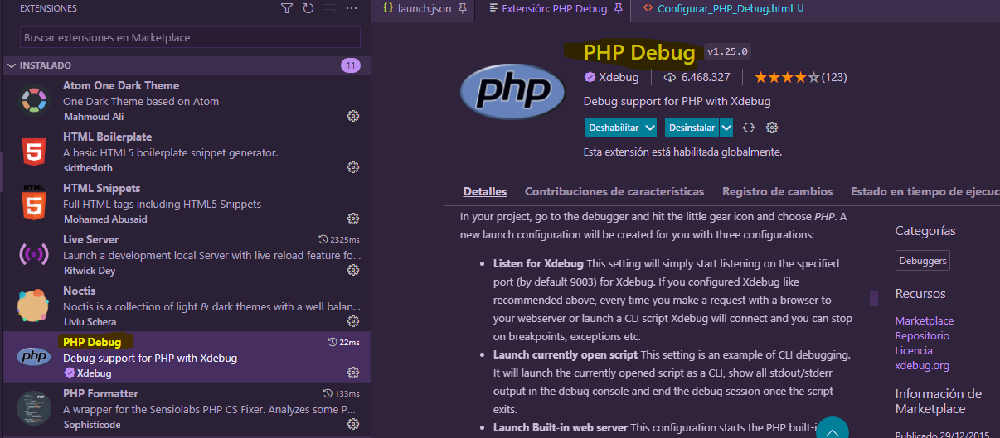
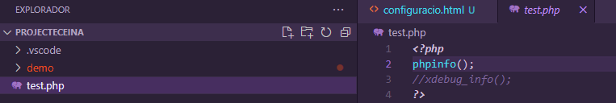

PHP DEBUG
1.- Extensió PHP Debug al Visual Studio Code
Anem a l'apartat de extensions del Visual Studio Code i descarraguem i instal·lem
aquesta extensió

2.- Crear Fitxer test.php dins el entorn de treball

3.- Executem test.php
4.- Veure el codi font resultant i el copiem tot


5.- Enganxem el que hem copiat al Instal·lador Wizard i executem

6.- Descarraguem el fitxer .dll que ens indica

7.- Movem aquesta dll a C:\xampp\php\ext i renombrem el fitxer a php_xdebug.dll
8.- Actualitzem el fitxer C:\xampp\php\php.ini per afegir les següent líneas:

9.- Fem restart al Apache
10.- Executem test.php amb nomès la línea xdebug_info();

Hauriem de veure una pàgina semblant aquesta
11.- Executem test.php amb nomès la línea phpinfo();

Hauriem de veure una pàgina semblant aquesta si busquem amb ctrl+F xdebug
Anem a les extensions i apretem el engranatge en l'extensió PHP Debug i anem a Configuració

12.- Configurem el fitxer settings.json afegint la línea (o modificant):

Si tot ha anat be ja hauria de funcionar correctament. Posa un breakpoint i prem F5 per debuggar
Reiniciar Visual Studio Code i Apache si no funciona